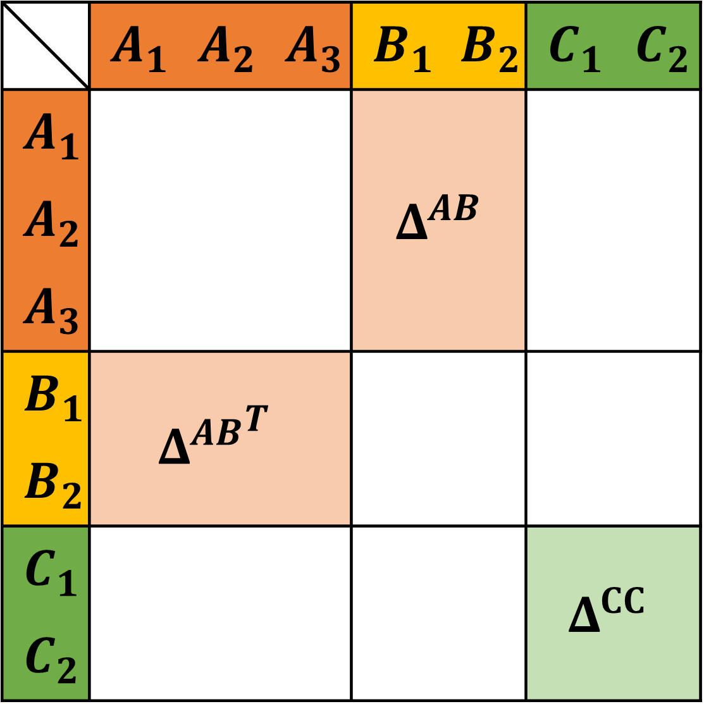

Association¶
The Helmholtz contribution due to short range attractive interaction (“association”) in SAFT models can be conveniently expressed as
Here, \(\alpha\) is the index of all distinguishable association sites in the system. The site density \(\rho_\alpha\) is the density of the segment or molecule on which the association site is located times the multiplicity of the site. The fraction of non-bonded association sites \(X_\alpha\) is calculated implicitly from
where \(\Delta^{\alpha\beta}\) is the association strength between sites \(\alpha\) and \(\beta\). The exact expression for the association strength varies between different SAFT versions. We implement the expressions used in PC-SAFT but a generalization to other models is straightforward.
The number of degrees of freedom in the association strength matrix \(\Delta\) is vast and for practical purposes it is useful to reduce the number of non-zero elements in \(\Delta\). In \(\text{FeO}_\text{s}\) we use 3 kinds of association sites: \(A\), \(B\) and \(C\). Association sites of kind \(A\) only associate with \(B\) and vice versa, whereas association sites of kind \(C\) only associate with other sites of kind \(C\). By sorting the sites by their kind, the entire \(\Delta\) matrix can be reduced to two smaller matrices: \(\Delta^{AB}\) and \(\Delta^{CC}\).
{kind=link}
In practice, the \(AB\) association can be linked to hydrogen bonding sites. The \(CC\) association is less widely used but implemented to ensure that all the association schemes defined in Huang and Radosz 1990 are covered.
Calculation of the fraction of non-bonded association sites¶
The algorithm to solve the fraction of non-bonded sites for general association schemes follows Michelsen 2006. The problem is rewritten as an optimization problem with gradients
The analytic Hessian is
with the Kronecker delta \(\delta_{\alpha\beta}\). However, Michelsen 2006 shows that it is beneficial to use
instead. \(X_\alpha\) can then be solved robustly using a Newton algorithm with a check that ensures that the values of \(X_\alpha\) remain positive. With the split in \(AB\) and \(CC\) association the two kinds different versions could be solved separately from each other. This is currently not implemented, because use cases are rare to nonexistent and the benefit is small.
A drastic improvement in performance, however, can be achieved by solving eq. (1) analytically for simple cases. If there is only one \(A\) and one \(B\) site the corresponding fractions of non-bonded association sites can be calculated from
The specific form of the expressions (with the square root in the denominator) is particularly robust for cases where \(\Delta\) and/or \(\rho\) are small or even 0.
Analogously, for a single \(C\) site, the expression becomes
PC-SAFT expression for the association strength¶
In \(\text{FeO}_\text{s}\) every association site \(\alpha\) is parametrized with the dimensionless association volume \(\kappa^\alpha\) and the association energy \(\varepsilon^\alpha\). The association strength between sites \(\alpha\) and \(\beta\) is then calculated from
with
and
The indices \(i\), \(j\) and \(k\) are used to index molecules or segments rather than sites. \(i\) and \(j\) in particular refer to the molecule or segment that contain site \(\alpha\) or \(\beta\) respectively.
On their own the parameters \(\kappa^\alpha\) and \(\varepsilon^\beta\) have no physical meaning. For a pure system of self-associating molecules it is therefore natural to define \(\kappa^A=\kappa^B\equiv\kappa^{A_iB_i}\) and \(\varepsilon^A=\varepsilon^B\equiv\varepsilon^{A_iB_i}\) where \(\kappa^{A_iB_i}\) and \(\varepsilon^{A_iB_i}\) are now parameters describing the molecule rather than individual association sites. However, for systems that are not self-associating, the more generic parametrization is required.
SAFT-VR Mie expression for the association strength¶
We provide an implementation of the association strength as published by Lafitte et al. (2013). Every association site \(\alpha\) is parametrized with two distances \(r_c^\alpha\) and \(r_d^\alpha\), and the association energy \(\varepsilon^\alpha\). Whereas \(r_c^\alpha\) is a parameter that is adjusted for each substance, \(r_d^\alpha\) is kept constant as \(r_d^\alpha = 0.4 \sigma\). Note that the parameter \(r_c^\alpha\) has to be provided as dimensionless quantity in the input, i.e. divided by the segment’s \(\sigma\) value.
The association strength between sites \(\alpha\) and \(\beta\) is then calculated from
with
and
where
The integral is solved using a Gauss-Legendre quadrature of fifth order where the lower limit, \(l\), is determined using the method of Aasen et al. The dimensionless bonding volume \(K^{\alpha\beta}_{ij}\) (see A43) utilizes arithmetic combining rules for \(r_c^{\alpha\beta}\), \(r_d^{\alpha\beta}\) and \(d_{ij}\) of unlike sites and segments, respectively.
Helmholtz energy functional¶
The Helmholtz energy contribution proposed by Yu and Wu 2002 is used to model association in inhomogeneous systems. It uses the same weighted densities that are used in Fundamental Measure Theory (the White-Bear version). The Helmholtz energy density is then calculated from
with the equations for the fraction of non-bonded association sites adapted to
The association strength, again using the PC-SAFT parametrization, is
The quantities \(\xi\) and \(\xi_i\) were introduced to account for the effect of inhomogeneity and are defined as